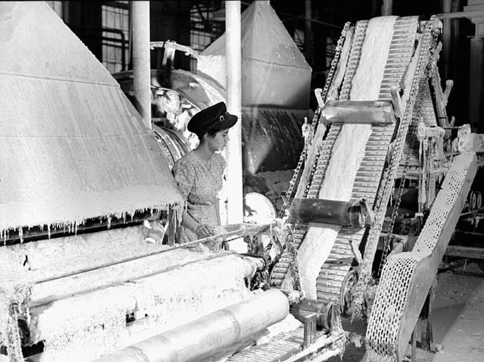

FILE FCP-48 HISTORICAL CASE FILE
Johns-Manville, asbestos knowledge and worker exposure
ASSESSMENT: Serious occupational hazards and concealment by parts of the industry are documented; claims should identify company, period and specific exposure.
Documented findings, economic interpretation and unresolved claims are assessed separately.

Claim under review
The question is whether asbestos producers concealed serious occupational health risks from workers and the public.
Asbestos disease often appears decades after exposure, so the key evidence is not merely a later diagnosis: it is the exposure route, dose, latency and what company decision-makers knew when controls and warnings were chosen.
Context and timeline
Medical reports linked asbestos exposure to disease well before widespread regulation. Internal company records and litigation showed Johns-Manville and other firms received warnings while exposure continued; the company filed bankruptcy in 1982 amid claims.
Occupational cohort studies provide evidence about population-level risk, while company memoranda and testimony speak to knowledge and disclosure. Neither source class alone proves the exposure history or state of mind in a particular worker’s case.
Primary records and formal findings
Court records, congressional hearings and OSHA/EPA actions document known hazards and changing disclosure and control duties. Findings and liability are firm-specific; they do not imply every exposure was knowingly hidden by every employer.
Claims should distinguish Johns-Manville from the wider industry and identify the product, plant and period. Bankruptcy reorganized compensation through a trust; that procedure addressed claims distribution but did not convert every asserted exposure into a litigated finding.
Independent economic evidence
Occupational epidemiology and disease latency independently connect asbestos exposure to mesothelioma and lung cancer; cohort studies show dose and duration relationships.
The evidentiary chain runs from exposure records through latency and medical causation to corporate knowledge and warning decisions. Findings at one link do not automatically resolve every individual claim.
Counter-evidence and limitations
Scientific certainty developed over time, and historical company knowledge must be dated carefully. Not every worker’s disease source is identifiable, and later bankruptcy trusts compensate claims under defined evidentiary rules.
Falsifiable checks and assessment
Compare internal medical studies, worker warnings and ventilation records with public statements and exposure measurements; establish when decision-makers had credible evidence and what controls were feasible.
Assessment: Serious occupational hazards and concealment by parts of the industry are documented; claims should identify company, period and specific exposure.
Sources and evidentiary notes
- OSHA, asbestos standards and rulemaking records (1970s–1980s)Regulatory findings and exposure limits document recognized hazards. Its findings are limited to the parties, conduct, dates or mandate covered by that record.
- Johns-Manville bankruptcy court and reorganization records (1982–88)Primary record of asbestos claims and corporate response. Its findings are limited to the parties, conduct, dates or mandate covered by that record.
- Irving J. Selikoff, “Asbestos Diseases,” Annals of the New York Academy of Sciences (1960s)Epidemiological evidence on occupational risk and latency. It addresses this episode but cannot alone resolve the broader causal question.
Historical research only; not investment or legal advice.